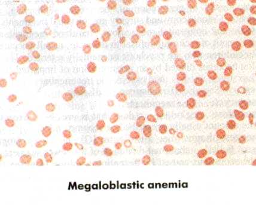
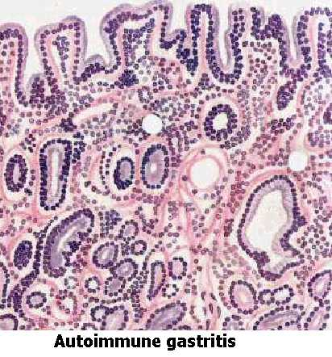
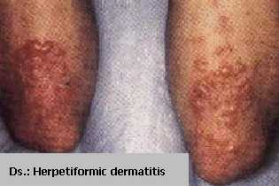
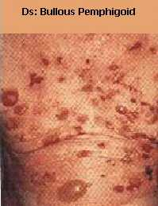
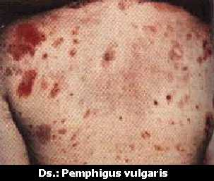
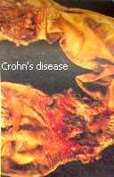
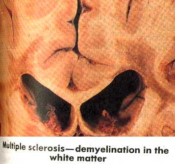

MODIFICATION OF AUTOANTIGENS
Another traditional view on the problem of T-helper tolerance bypass associates the origin of this phenomenon with the modification of the autoantigen molecule. If a potentially autoantigenic determinant ( hapten ) is complexed to a new carrier, the carrier part of the complex may be recognized by clones of non-tolerant (non-deleted) T-helper cells as foreign one. The T cell would then cooperate with the hapten-specific B cells, leading to the production of autoantibodies. This modification of the molecule could arise in several ways:
- Complexing of self-antigens with drugs or microorganisms. Autoimmune hemolytic anemia associated with some drugs may be due to an alteration of the red cell surface, thus creating epitopes which can be recognized by T-helper that stimulates B cells.
- Partial degradation of autoantigen. This could expose new antigenic determinants. Thus, partially degraded collagen and enzymically altered thyroglobulin or g - globulin are more immunogenetic than the native species. The autoantibodies to g - globulin (rheumatoid factors) induced during some bacterial, viral, and parasitic infections may well be due to alterations of immunoglobulin part of immune complexes by either the microorganisms or lysosomal hydrolases.
New concept of autoallergy stresses that modified autoallergen in fact is no longer true autoallergen. That’s why in many cases of this kind it is more justified to call the target of reasponse “neoantigen”. Some cases are, in fact, very close in their mechanisms to the situations described earlier.
The diversity of proven and highly probable autoallergic diseases is great and only partially described. In last years the autoimmune origin of many diseases, previously never associated with immunopathology, was understood.
Brief synopsis of this group of autoimmune disorders is given in the following table:
| DISORDER | TARGET OF AUTO-ANTIBODIES | AUTHOR(S) | YEAR |
| Pernicious
anemia  |
Gastrin receptor and/or H+ pump of pariethal cells | B.H. Toh | 1985 |
| Resistant ovary syndrome | FSH receptor | L. Harrison | 1983 |
| Gastritis A
and peptic ulcer  |
H2-histaminic gastric receptor | S. Dobi, B. Lonkey | 1982 |
|
N-cholinergic receptor of motor plaques. | D. Drachmann | 1978 |
| Lambert-Iton syndrome | Pre-synaptic membrane of motor terminals | I. Roitt | 1994 |
 |
Reticulin of epidermal basal membrane anchoring fibrils | G.F. Murphy | 1997 |
 |
Hemidesmosomes of lamina lucida | G.F. Murphy | 1997 |
 |
Desmogleins of skin and mucosa | G.F. Murphy | 1997 |
| Allergic rhinitis and some forms of asthmatic bronchitis | b 2- adrenoreceptor | A. Augustin et al. | 1982 |
| Aplastic anemia | Erythropoetin, its receptor or erythroid precursor cells | V. Nydegger | 1984 |
| Addison’s disease | 17a -hydroxylase or ACTH receptor | K. Krohn et al. | 1992 |
Graves’ disease
|
TSH receptor | Farid Nadir et al | 1984 |
| Ulcerative
colitis  |
Endocrinocytes of bowel | H. Jones et al | 1983 |
| Vitiligo | Thyrosine hydroxylase of melanocytes | M. Blecher | 1984 |
| Schizophrenia | Stimulating anti-dopamin receptor | J. H. Knight | 1983 |
| Parkinsonism | Blocking anti-dopamin receptor | V. Cotran et al. | 1989 |
| Cushing’s syndrome | Growth stimulating anti-adrenocortical | D. Petranyi | 1983 |
| Sheehan’s syndrome | Pituitary cells | A. Pouplard | 1982 |
| Hypopara-thyroidism | Parathyroid cells | P. Burchardt | 1982 |
| IDDM type I | Glutamate decarboxylase, surface insulin and carboxypeptidase H of b - cells. | G.S. Eisenbarth | 1984 |
| Primary Insulin resistance (some cases), cryptogenic hypoglycemia (some cases) | Insuline receptor (blocking or stimulating) | L. Tardella et al. | 1983 |
| Prepubertal growth retardation | GH receptors | L. Miraquian et al. | 1983 |
| Primary biliary cirrhosis | Mitochondrial antigens | P. Chandrasoma, C. Taylor | 1998 |
| Active chronic hepatitis | Cytoskeleton proteins | P. Chandrasoma, C. Taylor | 1998 |
| Goodpasture’s syndrome | Basement membrane of glomeruli and alveolar walls | V. Kumar et al. | 1997 |
| Demyelinizing
neuropathies  |
Neutral glycolipids and basic protein of myelin | B. Zweiman, A.I. Levinson | 1991 |
| Verlhof’s disease | Platelet glycoprotein gpIIIa | P. Chandrasoma, C. Taylor | 1998 |
| Hyperlipoproteinemia (type I) | Lipoprotein lipase | J.-L. Beaumond, V. Beaumond | 1977 |


At the same time, there are more or less successful attempts of antiidiotypic antibodies’ therapeutic application for the treatment of autoimmune diseases (e.g. trombocytopenic purpura and some aplastic anemiae). New therapeutic perspectives in the field of autoallergy treatment may be opened via desensitization of patients with autoallergy by means of enteric administration of offending antigens (e.g. in myastenia gravis and demyelinizing neuropathies). Very promising trend of experimental therapy and diagnosis for autoimmune disorders is that based on cloning of autoantigens (I.Roitt, A. Cooke, 1994; R.L. Coppel et al. 1989).
To resume the whole chapter of autoallergy, it is worth to underline that this phenomenon witness for immune response can bring various disorders and hit virtually every organ and each tissue in our body, although it is believed to be the most perfect, individualized and purposly targeted weapon of the organism.
As we can see, even immune system is not able always determine precisely which scale, strength and target of response is required in concrete situation.
NEXT CHAPTER OR